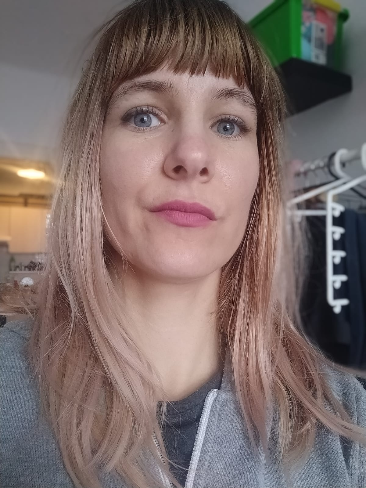

Praha · Hľadám čiastočný úväzok
Rozkladám veci na súčiastky, hľadám kde to škrípe a vymýšľam, ako to spraviť lepšie. Keď sa do niečoho zakúsnem, čas prestáva existovať, na obrazovke sa kopí jedno otvorené okno za druhým a okolie medzitým stíha všetko ostatné. Začínam veci s nadšením. Dokončujem... hej, aj to sa stáva.

O mne
Lokalita
Praha, ČR
Jazyky
Slovenčina · Čeština · Angličtina B2
Spolupráca
Čiastočný úväzok · DPČ · DPP · OSVČ
Forma
Hybrid · Remote
K účtovníctvu som sa dostala trochu po schodoch – na strednej mi to šlo, takže mi to nejako prischlo. Prvú reálnu príležitosť mi dala externá účtovníčka môjho otca, ktorá zrejme nevedela, do čoho ide, a zverila mi prípravu podkladov. Postupne som prevzala celé účtovníctvo a zistila som, že ma baví, keď veci do seba zapadajú – a keď nezapadajú, ešte viac ma baví prísť na to prečo.
Momentálne skúšam niečo nové – produktová adminitrácia v Košík.cz. Lákalo ma to najmä tým, že hľadali niekoho s aktívnou slovenčinou, čo je v Čechách zhruba také bežné ako slnečné počasie v novembri. Čo presne ma čaká, ešte neviem. Ale zistiť to plánujem dôkladne.
Čokoľvek robím, robím precízne a naplno. Niekedy až príliš naplno – ale to už viete z úvodného odstavca.
Čo ponúkam
01
Účtovníctvo a reporting
Reconciliácie, zaúčtovanie, intercompany účtovníctvo, podpora uzávierky, analýza odchýlok. Presne a bez zbytočných chýb – ostatné by ma aj tak nedalo spávať.
02
Administratíva a dáta
Správa produktových dát, príprava podkladov, práca s Excelom. Tam, kde treba dôkladnosť a oko pre detail – a niekoho, koho baví nachádzať nezmysly v tabuľkách.
03
Controlling a analýza
Prehľady, reporty, hľadanie nezrovnalostí. Pozerám sa na čísla z viacerých uhlov – kým niečo nesedí, neviem to nechať tak. Čo môj okolie občas ide na nervy.
„Človek, ktorý si veci všimne – aj tie, ktoré si všimnúť nemali."
Skúsenosti
Pracovné skúsenosti
Účtovník výnosov
2023 – 2024
IDC CEMA · Praha
Reconciliácia výnosov a súvahových účtov, mesačný reporting, analýza odchýlok, podpora auditu.
Intercompany účtovník
2019 – 2023
IDC CEMA · Praha
Intercompany fakturácia, reconciliácie pohľadávok a záväzkov naprieč viacerými entitami, podpora uzávierky.
Účtovník – juniorská pozícia
2018 – 2019
Edenred · Praha
Spracovanie faktúr, bankové reconciliácie, podpora mesačnej uzávierky.
Produktový administrátor
2025 – súčasnosť
Košík.cz · Praha
Správa produktových dát. Stále sa učím – čo je na tom to najlepšie.
Zručnosti a nástroje
Účtovné systémy
Nástroje
Rozvíjajúce sa
Vzdelanie
Kontakt
Hľadám čiastočný úväzok alebo spoluprácu na DPČ / DPP / OSVČ v oblasti účtovníctva, reportingu alebo administratívy. Hybrid alebo remote, Praha a okolie.